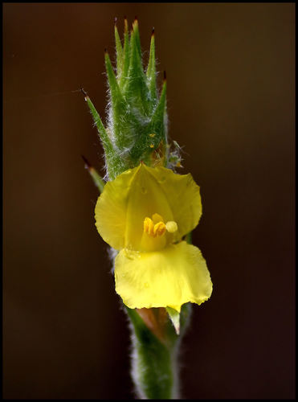

Philydraceae
The Philydraceae family, commonly known as the Frogsmouth or Woolly Waterlily family, is a small family of monocotyledonous flowering plants in the order Commelinales. It includes about 5 genera and 6 species of perennial herbs. These plants are typically found in wet habitats (marshes, swamps, stream banks) across Southeast Asia, New Guinea, and Australia. They are characterized by their often woolly appearance and distinctive, bilaterally symmetrical flowers.
Overview
Philydraceae comprises a small group of herbaceous monocots adapted to aquatic or semi-aquatic environments. The family is notable for its often dense covering of woolly hairs (tomentum) on the stems and inflorescences, particularly prominent in the type species Philydrum lanuginosum (Woolly Waterlily or Frogsmouth). Their leaves are typically basal and iris-like (equitant and linear/sword-shaped).
The flowers are perhaps the most distinctive feature, being strongly zygomorphic (bilaterally symmetrical) with a unique structure: only four petaloid tepals (two large outer, two small inner) and a single fertile stamen. This specialized floral morphology suggests adaptation to specific pollinators.
Phylogenetically, Philydraceae is placed within the Commelinales order, alongside related families like Pontederiaceae (Pickerelweed family) and Haemodoraceae (Bloodwort family). Its distribution across Southeast Asia and Australasia reflects biogeographic patterns common to many plant groups in the region.
Quick Facts
- Scientific Name: Philydraceae
- Common Name: Frogsmouth Family, Woolly Waterlily Family
- Number of Genera: Approximately 5 (Philydrum, Helmholtzia, Orthothylax, Philydrella)
- Number of Species: Approximately 6
- Distribution: Southeast Asia, New Guinea, Australia
- Evolutionary Group: Monocots - Commelinids - Commelinales
Key Characteristics
Growth Form and Habit
Plants are perennial herbs, often robust, growing from rhizomes or corms. They typically inhabit wet environments like marshes, swamps, and stream edges. Stems and inflorescences are frequently covered in dense, branched, woolly hairs (tomentum).
Leaves
Leaves are mostly basal, arranged distichously (in two ranks) or spirally. They are typically equitant (flattened and overlapping at the base, like an iris leaf), linear or sword-shaped (ensiform), and sheathing at the base. Venation is parallel.
Inflorescence
Flowers are arranged in a terminal spike or sometimes a panicle. The inflorescence axis is often densely covered in woolly hairs. Floral bracts are present and can be conspicuous.
Flowers
Flowers are sessile or shortly pedicellate, bisexual, and highly zygomorphic (bilaterally symmetrical). They are usually yellow or white and ephemeral (short-lived). Key features include:
- Perianth: Consists of only 4 petaloid tepals arranged in two whorls. The two outer (lateral) tepals are large, while the two inner (anterior and posterior) tepals are smaller.
- Androecium: Features only 1 fertile stamen (the posterior one, opposite the small posterior inner tepal). The filament is often flattened. Two anterior staminodes (sterile stamens) may sometimes be present.
- Gynoecium: Features a superior ovary composed of 3 fused carpels. It is typically 3-locular with numerous ovules on axile placentas, or sometimes 1-locular with parietal placentation. The style is simple, and the stigma is capitate or slightly lobed.
Fruits and Seeds
The fruit is a loculicidal capsule (splitting open along the back of each chamber), often enclosed by the persistent tepals. It contains numerous small seeds.
Chemical Characteristics
The family is known to contain various phenolic compounds. Detailed chemical studies across all genera are limited.
Field Identification
Identifying members of Philydraceae involves recognizing their specific habitat preference and unique combination of vegetative and floral traits:
Primary Identification Features
- Habit: Perennial herbs growing in wet places (marshes, stream banks).
- Leaves: Mostly basal, equitant (iris-like), linear or sword-shaped.
- Hairs: Inflorescence axis and sometimes stems/leaves often covered in dense woolly hairs.
- Inflorescence: Terminal spike or panicle.
- Flowers: Strongly zygomorphic (bilaterally symmetrical), usually yellow or white.
- Perianth: Distinctive structure with only 4 tepals (2 large outer, 2 small inner).
- Stamens: Only 1 fertile stamen present.
- Ovary: Superior.
- Fruit: A capsule.
- Distribution: SE Asia, New Guinea, Australia.
Seasonal Identification Tips
- Flowering often occurs during wetter periods or in spring/summer, depending on the region.
- The woolly inflorescences can be conspicuous even before flowers open fully.
Common Confusion Points
Philydraceae can be distinguished from similar-looking families:
- Iridaceae (Iris Family): Often have equitant leaves, but flowers typically have 6 tepals (3+3) and 3 stamens, and the ovary is usually inferior.
- Haemodoraceae (Bloodwort/Kangaroo Paw Family): Also in Commelinales, often hairy, but flower structure differs (often 6 tepals, 3 or 6 stamens), and ovary can be inferior.
- Xyridaceae (Yellow-eyed Grass Family): Have basal leaves and often spike-like inflorescences, but flowers usually have 3 sepals, 3 petals, and 3 fertile stamens.
- The combination of equitant leaves, woolly hairs (often), 4 tepals (2+2), and a single fertile stamen is characteristic of Philydraceae.
Field Guide Quick Reference (Philydraceae)
Look For:
- Perennial herbs in wet habitats
- Leaves: Basal, equitant (iris-like)
- Often densely woolly inflorescence (spike/panicle)
- Flowers: Zygomorphic, yellow/white
- Perianth: 4 tepals (2 large + 2 small)
- Stamens: 1 fertile
- Ovary: Superior
- Fruit: Capsule
Key Distinctions:
- 4 tepals & 1 stamen (vs. 6 tepals & 3 stamens in Iridaceae)
- Superior ovary (vs. often inferior in Iridaceae, Haemodoraceae)
- Different flower structure than Haemodoraceae & Xyridaceae
- Distribution: SE Asia / Australasia
Notable Examples
The family includes a few distinct genera:

Philydrum lanuginosum
Frogsmouth, Woolly Waterlily
The most widespread species, found from Southeast Asia to Australia. A tall, emergent aquatic herb recognized by its very woolly stems and terminal spike of bright yellow, zygomorphic flowers, each lasting only a day.

Helmholtzia glaberrima (example species)
Stream Lily
This genus contains robust herbs, often found along rainforest streams in New Guinea and eastern Australia. Species like H. glaberrima are often less woolly than Philydrum and bear panicles of white or pinkish flowers.

Philydrella pygmaea (example species)
(No common name)
This genus includes smaller, more slender herbs endemic to southwestern Western Australia, often growing in seasonally wet areas. They typically have yellow flowers in less densely woolly spikes compared to Philydrum.
Phylogeny and Classification
Philydraceae is placed within the order Commelinales, which is part of the large Commelinid clade of monocots (a group that also includes grasses, palms, gingers, etc.).
Within Commelinales, Philydraceae forms a well-supported clade with Pontederiaceae (Pickerelweed family) and Haemodoraceae (Bloodwort family). These three families share several characteristics, including the presence of certain phenolic compounds and often tendencies towards zygomorphic flowers, although the specific floral structures differ significantly among them.
The specialized floral structure of Philydraceae (4 tepals, 1 stamen) represents a significant modification from the more typical 6-tepaled, 3- or 6-stamened condition common in related monocot orders, highlighting evolutionary divergence likely driven by pollination mechanisms.
Position in Plant Phylogeny
- Kingdom: Plantae
- Clade: Angiosperms (Flowering plants)
- Clade: Monocots
- Clade: Commelinids
- Order: Commelinales
- Family: Philydraceae
Evolutionary Significance
Philydraceae is significant for understanding monocot evolution:
- Its highly specialized floral structure (4 tepals, 1 stamen) demonstrates evolutionary modification within the Commelinales, likely linked to specific pollinators.
- Its phylogenetic position helps resolve relationships within the Commelinales order.
- The family's Australasian/Southeast Asian distribution provides insights into the biogeographic history of the Commelinid clade.
- It showcases adaptations to wet, aquatic, or semi-aquatic habitats within its lineage.